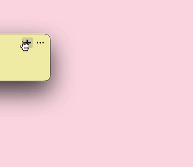

Adding sticky notes on your Android device has never been easier with OneSticker. Follow these simple steps to create and manage your digital sticky notes effortlessly.
1. Install OneSticker
Download and install the OneSticker application on your Android device from the Google Play Store or directly from the OneSticker website.

2. Create a New Sticky Note
Open OneSticker and tap on the "+" button to create a new sticky note. It's that simple! Start typing your note immediately.
3. Sync Across All Platforms
OneSticker offers seamless synchronization across all major platforms. Your notes will be available on Windows, Mac, iPhone, and other Android devices, ensuring you never miss an important thought or reminder.

With OneSticker, you can easily create, manage, and access your sticky notes from any device, making it the perfect solution for staying organized in today's multi-device world.
Get OneSticker Now